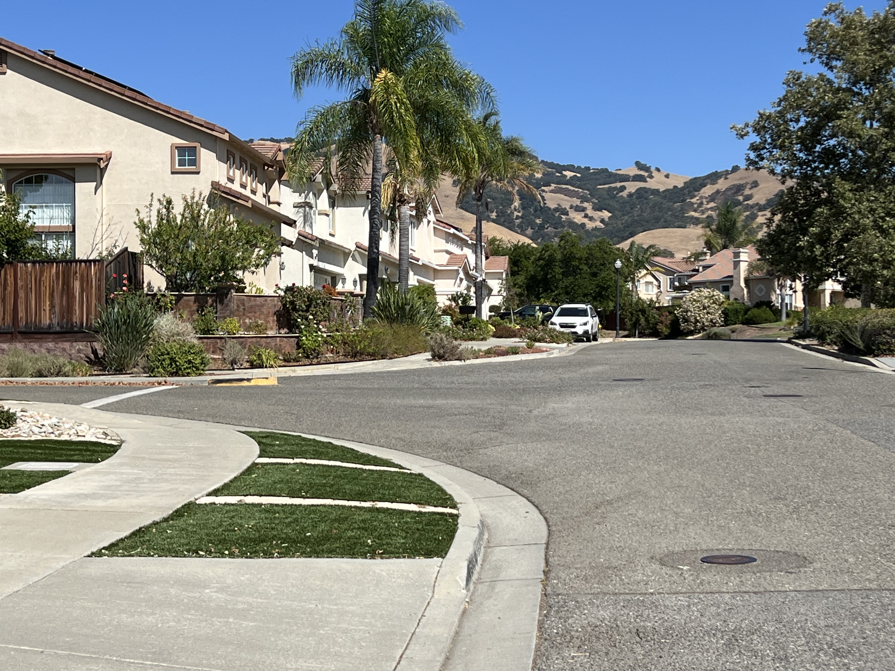

Demonstrate how moving back and zooming in changes perceived depth and converging lines, compared to standing close with a wide lens.
Wide & Close: Standing near the façade (e.g., 24–28mm). Strong convergence and dramatic perspective.

Tele & Far: Step back and zoom (e.g., 85–135mm). Lines appear more parallel; features look “compressed”.
Method
Pick a building façade with repeating lines (columns, windows).
Frame roughly the same composition twice:
Shot A: wide lens, stand close.
Shot B: step way back, zoom in to match framing.
Compare vanishing lines and relative size of elements.